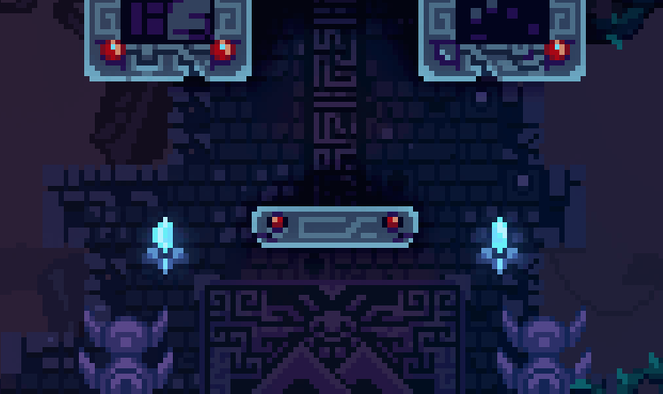

Basic Movement Tips
The primary methods of movement within Celeste are walking, climbing, and dashing. This page will cover tips to optimize walking and climbing in order to decrease your time in Celeste speedrunning.

Bunnyhopping used in the prologue.
Walking Optimizations
Aside from the prologue of the game, throughout much of the speedrun, you will want to avoid the ground as much as possible, as speed is lost much quicker while grounded. Whenever you're on the ground, you'll want to perform a dash of some kind to speed through levels.
One of the only non-dashing ground based movement tricks is called bunnyhopping. Bunnyhopping is used to maintain the momentum of a dash after the dash has finished. You can perform a bunnyhop by quickly tapping the jump button right as the player character, Madeline, touches the ground. Chaining bunnyhops one after another can be used to great effect.
Climbing and Stamina
Neutral jump chain.
Stamina Preservation
While climbing a wall, any movements you perform will decrease your limited stamina gauge. While your remaining stamina isn't shown, when you are about to run out, Madeline will begin to flash red as a warning.
To reduce stamina usage, you can release the grab button before jumping, which will allow you to wall jump without using stamina.
Neutral Jumping
The best way to preserve stamina while scaling a wall vertically is with a trick called a neutral jump. You can perform a neutral jump by releasing the grab button and jumping off the wall before immediately inputting the direction of the wall.
Chaining these neutral jumps will let you scale the tallest walls while using no stamina. This trick is very difficult to pull off in quick succession if you are playing on a controller, so practice is neccessary!